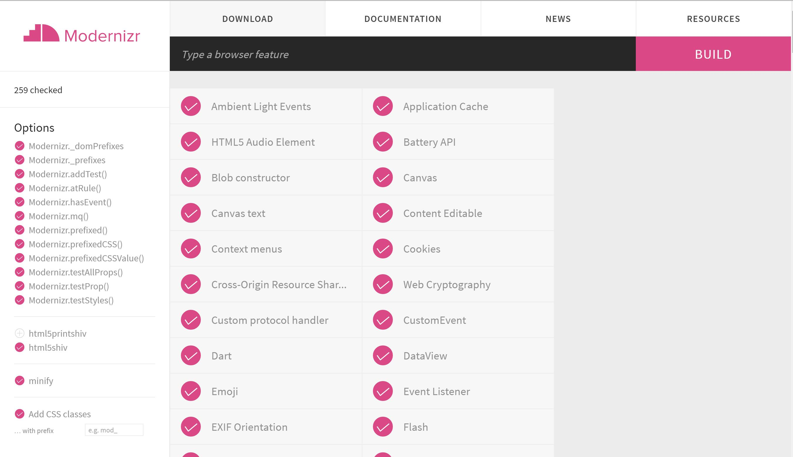
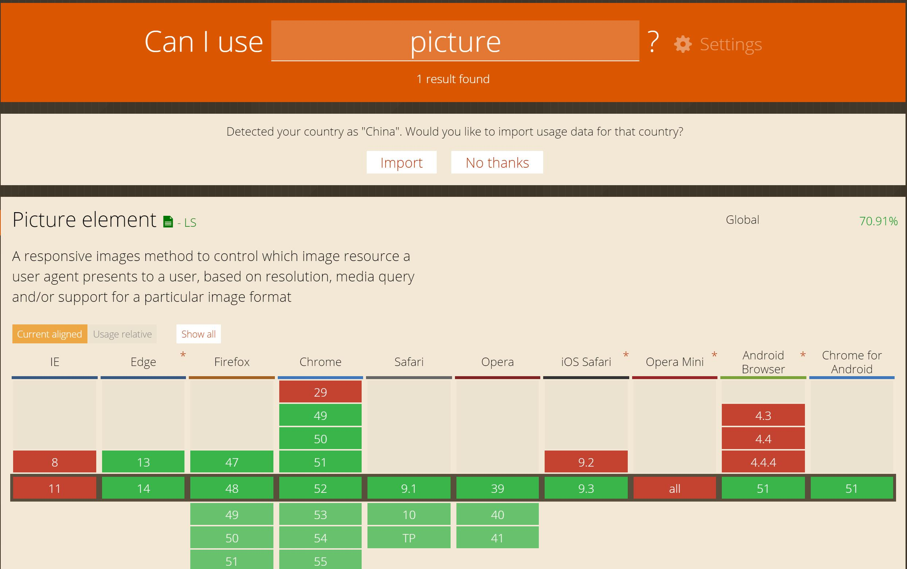

浅谈响应式
响应式网站概念
首先
各种不同的浏览器之前都会存在默认的行为，也就是默认的css样式并不是一样的。
所以我们需要统一浏览器行为，原来我们会引入reset.css，但reset.css会让很多标签失去原来的样式。
因此我们现在大多采用Normaliez.css,它在统一各浏览器默认css样式的同时，也保持了各个标签原有的一些样式。
处理IE低版本浏览器兼容性的问题。
1. CSS3媒体查询
我们使用到的媒体查询属于css3的属性，因此可能存在浏览器不兼容的情况。
1 | @media screen and (min-width:600px) { |
respond.js库可以帮我们解决浏览器不兼容media媒体查询的问题。
只需在html前引入下方 IE条件注释 ，如果 IE版本 小于等于8，则执行注释中的语句，我们就可以放心使用media
1 | <!--[if lte IE 8]> |
2. HTML5标签
同样，因为IE 6、7、8 不兼容HTML5,因此我们需要引入HTML5shiv,
1 | <!--[if lt IE 9]> |
它会通过js的方式创建HTML5的标签，让我们可以放心使用HTML5的新增标签。
3. 自适应图片
既然网站是响应式的，我们的图片当然也需要自适应。
我们可以引入HTML5新增元素<picture></picture>。
- 创建
标签。 - 在这些标签内创建一个你想用来执行任何一个特性的
元素。 - 添加一个
media属性，用来包含你想要的特性，如视口的当前高度(viewport height)，宽度(width)，方向(orientation)等。 - 添加一个
srcset属性与相应的图像文件名相匹配，进行加载。如果你想提供不同的像素密度，例如Retina显示屏，你可以添加额外的文件名到你的srcset属性中， - 添加一个回退的
<img>元素。
1 | <picture> |
但是并不是所有的浏览器都支持<picture></picture>，因此我们需要引入picturefill.js库,它会给不支持picture的浏览器使用替代方案。
1 | <script src="picturefill.js"></script> |
因为IE 9不能识别<picture></picture>中的<source>标签，因此我们需要这样写。
1 | <picture> |
4. 预防浏览器不兼容
Modernizr：专为HTML5和CSS3开发的功能检测类库。
我们可以在官网下载我们需要检测的属性。

比如我们需要检测SVG，我们就可以下载并保存到本地的js文件中，并在html中引入，如果浏览器不支持这个属性，就会自动在<html></html>标签上加上class="no-svg",
1 | <html class="no-svg"> |
我们就可以在css样式表中书写
1 | .no-svg header ... { |
给不兼容svg的情况增加替代方案。
最后
现在浏览器对HTML5和CSS3的兼容性参差不齐，我们也没必要全部记忆，
我们在使用这些属性时可以先去查看下这个标签或属性的浏览器兼容情况。我们可以访问
我们只需要将我们需要查询标签或属性输入就行，

推荐框架
比较好的工具
简单安装的教程，本人博客也有写，附上地址：
- http-server 基于nodejs的轻量级服务器
- Browsersync 多浏览器多终端同时进行调试的工具
- Gulp 基于流的自动化构建工具